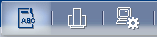
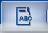
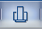

Операционная панель является центральным элементом управления в Prinect Shooter Print Manager.
Кнопки для изменения между «задания», «Устройства» и «Администрация» находятся слева от операционной панели. Если вы переходите в другой раздел, меняется содержимое динамического окна и панели динамического управления.

Эти области составляют верхний уровень иерархии в пользовательском интерфейсе Prinect Shooter.

В разделе «Задание» перечислены все задания, которые в настоящее время находятся в системе. Вы можете применять различные фильтры для перечисленных заданий, переключаясь между вкладками. Например, вы можете перечислить те задания, которые уже выполнены, перейдя на вкладку «Завершено».

Установленное выходное устройство указано в "Устройствах". Дважды щелкнув запись в списке, вы можете вызвать менеджера двигателя для управления устройством.
В разделе «Администрация» можно управлять настройками конфигурации и системы.
Есть две кнопки справа от трех кнопок функции, которые вы можете использовать для вызова информационной страницы, показывающей версию Prinect Shooter или онлайн-помощь (марка вопросов).
 Примечание: Вы также можете продемонстрировать онлайн-помощь с помощью
Примечание: Вы также можете продемонстрировать онлайн-помощь с помощью
F1
Ключ на клавиатуре. Затем открывается окно справки, содержание которого относится к элементу, который вы отметили в пользовательском интерфейсе.
Copyright © 2013 Heidelberger Druckmaschinen AG